Integrated Healthcare Business Management System
具備商業行為的
整合醫療系統
此專案作品集主要呈現我如何將原本複雜、無操作邏輯、難上手的設計介面，透過有系統的梳理，以步驟引導、易上手的原則，規則化操作流程，並透過Figma模擬優化後的UI操作。
內部專案
專案簡介
公司內部開發專案，商業行為結合醫療控管的整合型後台系統。客群目標為醫療、醫美產業，物理治療及健身教室。
功能涵蓋門店權限、療程控管、產品售賣、營收數據、帳務管理、會員、資產、行銷...等。
我的角色與貢獻
◢
與PM、前端工程師、後端工程師溝通功能，確認畫面操作 。
◢
與前端工程師合作，設計UI介面。
◢
透過GIT與前端工程師協作，推送CSS檔案，使頁面視覺與設計稿一致。
◢
透過GIT與工程師協作，推送前端版型供後端開發串接。
專案成員
UI/UX設計師 X1
前端工程師 x 1
後端工程師 X2
PM X1
基於職業倫理，模糊處理並化名公司和專案名稱，揭示內容為已修改的虛構資料。如欲瞭解更多，歡迎透過人力網站與我聯繫。
優化說明
在此專案中，我主要負責使用者體驗與介面設計的優化。由於專案決策限制，導致系統出現邏輯不連貫、操作流程不一致，讓使用者難以學習並養成習慣。此外，介面缺乏統一的設計原則、無法RWD，大幅降低易用性與使用者體驗。
我的作品集專注於解決這些痛點，透過系統化的梳理與歸納，重新優化使用者體驗。我以「一致性與易用性」為核心，整體優化主要分成兩個章節:
-
1.
拆分重組基礎操作區塊的布局與流程，使用者可以快速上手，並依照操作經驗更直覺的尋找所需功能。
-
2.
以"產品設定"功能為例，回到功能原點，重新設計操作步驟，建立秩序、有邏輯的UI引導，優化後的介面讓使用者易於理解每一步驟的意義，正確完成目標，不需要再付出學習成本。
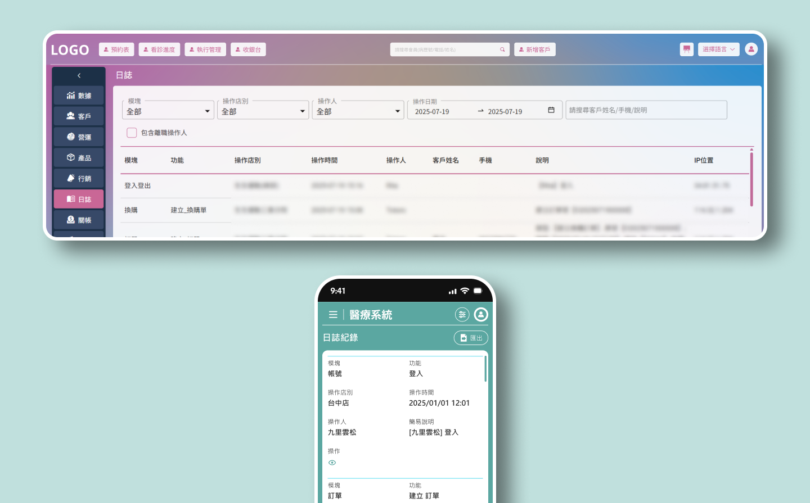
Section 1
系統化 UI 布局
實現RWD
因團隊決策，在原UI設計中，相同的基礎功能功能在各頁面被放在不同的位置，導致操作方式不同。不符邏輯的UI也無法RWD，使用者體驗與易用性大幅下降。 下列依序展示問題清單，可透過連結快速到達說明區塊，優化結果以Figma prototype模擬展示。
-
有問題的使用者介面:
-
→ 篩選條件未統一
-
→ 選單佔用畫面
-
→ 選單佔用畫面
-
強制攤平的功能:
-
→ UI 無法 RWD
-
RWD優化說明:
-
→ Figma模擬
1.1
有問題的
使用者介面
”第一眼就必需看到全部功能和資料” 為此系統開發的巨大難關。


篩選功能問題(上圖)
透過上圖呈現可得知，非邏輯性的需求造成篩選功能在不同功能頁面中，出現A、B、C三種不同的設計型態，使用者無法套用相同的經驗進行操作行為，上手難度提升。
解決(影片)
將散亂的篩選統整到右側，依序排列。給予完整的功能按鈕，操作簡易明瞭。 讓使用者更快養成固定行為模式，學習成本低，快速上手!
選單問題(上圖)
透過上圖呈現可得知，非邏輯性的需求造成篩選功能在不同功能頁面中，出現a、b、c三種不同的設計型態，使用者無法套用相同的經驗進行操作行為，上手難度提升。
-
a.
點擊 Sidebar主功能 > 無其他選單 > 進入主功能頁面。
-
b.
點擊 Sidebar主功能 > 有子功能 > 進入第一個頁面，選單隱藏 > 展開後選擇其他選單功能。
-
c.
點擊 Sidebar主功能 > 有子功能 > 進入第一個頁面，選單直接放在右側。
解決(影片)
選單內的選項，實際上就是主功能下的系列功能或子功能，應統整歸納進入左側Sidebar，將導航功能回歸到Sidebar主體。
還有各項子功能(上圖)
除了篩選和選單，頁面中的操作流程介面，為了全部攤平在同一層，沒有一個標準規則定義功能權重，排序優先使用右側版面。
-
多重操作的畫面，更應好好梳理每一個功能流程，定義功能權重，規劃秩序統一的操作介面，建立易上手的操作循環。 解決方案於Section 2，以產品設定作為解說案例。
1.2
頁面被強制攤平
無法進行響應式設計
”便利性” 導致過多跳轉功能與附加訊息，再加上 ”第一眼就可以看到全部功能”為重要先決條件，所有東西都不可隱藏。導致UI無法無法進行響應式設計，使用環境被限制，易用性大幅下降。
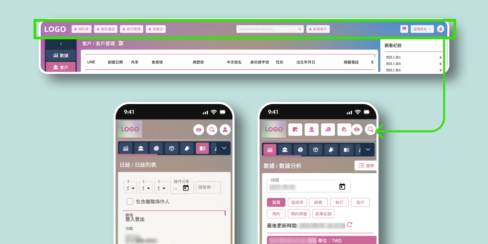
RWD 問題1
在”便利性”與”第一眼就可以看到全部功能”這兩項決策中，header放置過多常用功能。在裝置寬度改變後，仍堅持此需求，導致按鈕被擠壓難點擊，角色身分 icon甚至被擠出畫面之外。
-
人類無法一次性接收全部視覺訊息，應收斂不必要的”便利性”入口連結，透過有邏輯的規劃，階層化功能顯示。
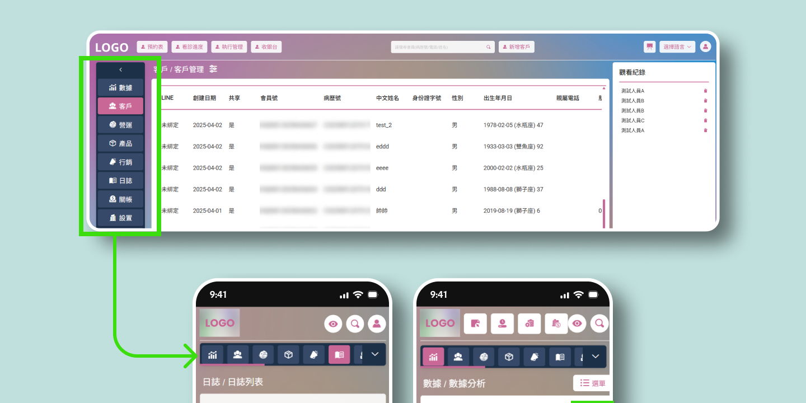
RWD 問題2
導航欄與選單未統整，與”便利性”、”第一眼就可以看到全部功能”的重要前提，導致畫面被功能多占用空間，導致主區塊的展示空間被壓縮。
-
人類無法一次性接收全部視覺訊息，應收斂不必要的”便利性”入口連結，透過有邏輯的規劃，階層化功能顯示。
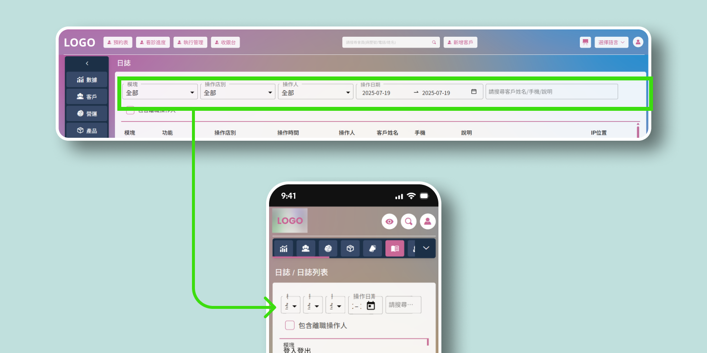
RWD 問題3
沒有統整的篩選，不可隱藏也不可改為直向排列的篩選，被擠壓後無法操作。 (直向排列會使資料table空間大幅減少，故不可修改排列，成為取消RWD計畫的主因之一)
-
操作者使用的螢幕解析度和尺寸比例各不相同，不可能所有功能與資訊全部攤平在同一層。
-
不合理需求應被收斂，使 UI 易於操作。
1.3
RWD優化展示
在功能龐大複雜的後台系統中，一致性的設計準則與操作行為必須被重點強調，建立規則制定統一操作流程，讓使用者可以快養成固定行為模式，快速上手!
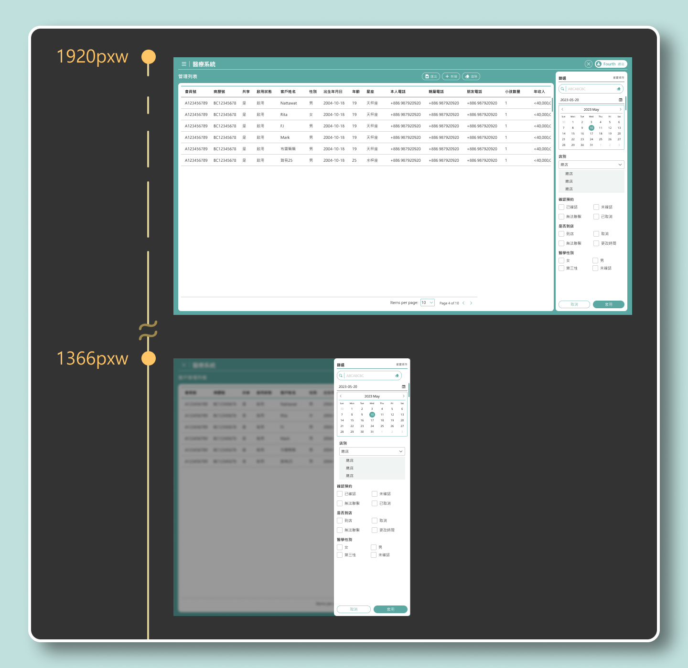
篩選介面RWD
大型解析度裝置(min-width: 1367px;)，篩選與主內容可同步展現，做為比對。
中小型析度裝置(max-width: 1366px;)，將篩選隱藏，透過icon按鈕觸發，觸發方式與大型解析度裝相同，操作流程統一又簡單，可使操作者快速上手。
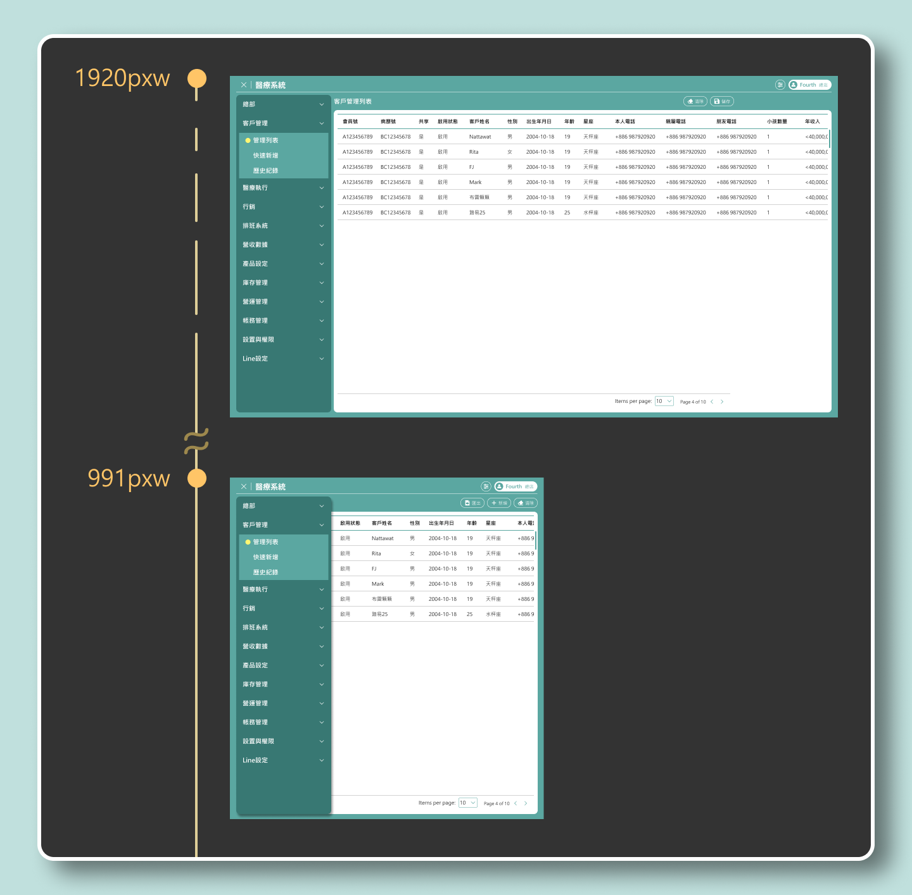
導航選單RWD
統整導航與選單，將頁面導向功能回歸Sidebar。如果主功能下只有一個子功能，仍然遵循規則，設定一個子功能標題，以利未來主功能擴展新子功能。
設定Breakpoint 991pxw以下時，改變Sidebar型態與整體布局，不擠壓主內容區。
Section 2
操作流程優化
回歸主功能子頁
在Section 1 中，子功能散亂的RWD問題懸而未解。在此以產品設定作為範例，將操作流程回歸主功能頁面，優化操作流程，同時解決UI RWD。
-
產品設定UI 問題
-
→ 操作介面難上手
-
→ 訊息混亂
-
先等等，回到目標原點
-
→ 重新理解需求，梳理流程
-
優化解說與prototype展示
-
→ Figma模擬
2.1
產品設定為例
使用者介面問題
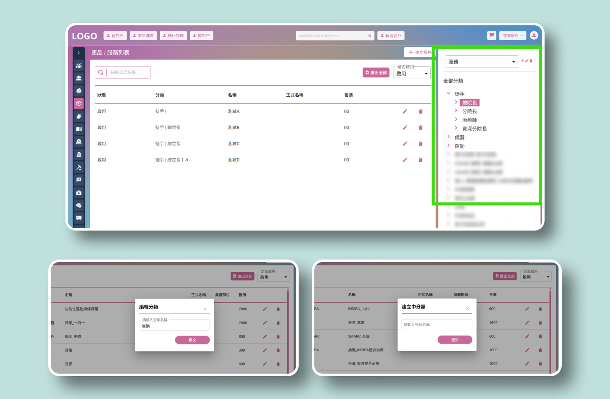
新增/編輯功能
產品設定功能主要用來定義分類，並在各分類下建立產品。原分類共有三階級: 第一級-大分類、第二級-中分類、第三級-分類，產品可隨意建立在任一階級下方。
以及為”便利性”與”一目了然”的需求，直接將階級分類與產品名稱以束狀階層展示於右側可點擊選則，配合功能icon按鈕點擊後跳出popup window 操作。
這種方式不僅使畫面資訊過多、使用困難，也造成某些情況下，後續有新分類或新產品時，資料難以被擴展。
-
●
訊息模糊
a.
Table沒有出現大分類、中分類、小分類的標題
b.
操作右側欄位時，並無法準確得知正在操作哪一個階層。
c.
無法在Table內得知產品被歸屬在哪一個階層裡。
-
▲
階級混亂:
a.
商品可直接分配在大分類與中分類下，而非最小分類下的產品內容
b.
商品容許被分配在各類階級非常彈性，但是資料上的查詢邏輯會變得複雜。
c.
使用者在設定產品歸屬時也容易在分類階層上出現混亂。
d.
當新的產品使新的分類階級出現時，無法將不同階級的同類產品在一起，必續全部刪除重新建立。
-
■
難以操作
a.
畫面訊息與功能過多，導致操作者無法聚焦重點。
b.
新增編輯功能被限制在畫面小範圍，在手持裝置中難以操作。
c.
沒有引導操作流程，上手難度增加。
d.
當分類下的項目越來越多，使用者很難快速找到目標。
-
●
Table標題文字與內容拆分，正確顯示分類階級。
-
▲
正確梳理分類階層與產品關係，將產品統一歸屬到最小級別。暫無分類或未確定的，歸屬為”其他”。
-
■
透過”隱藏” 漸進式引導使用者操作，聚焦目標，也確保不遺漏任一步驟。
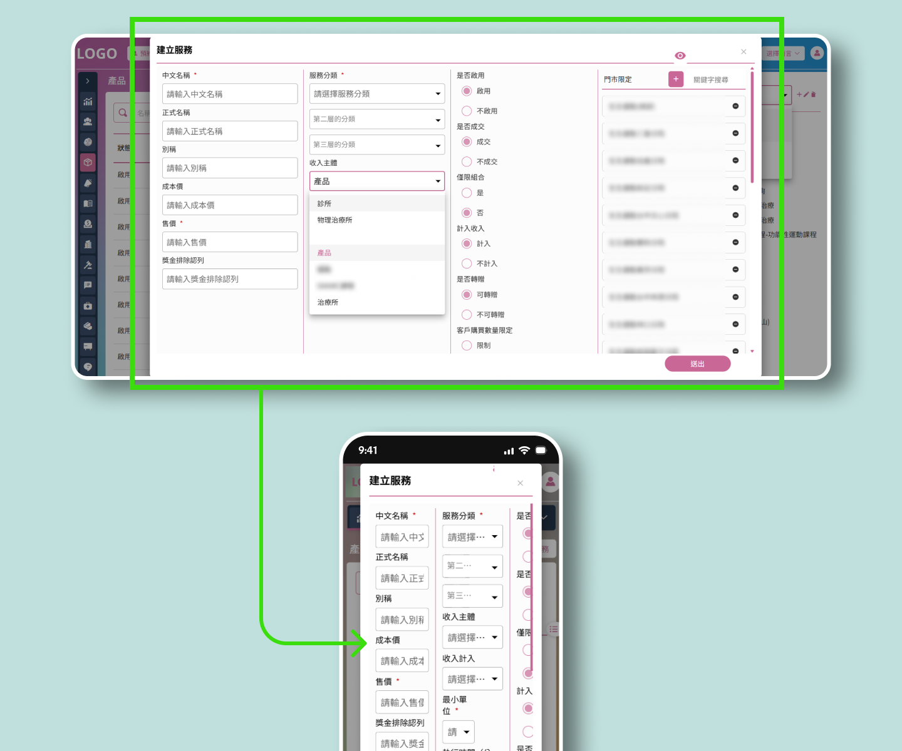
RWD 問題(上圖)
為了便利性，建立詳細資料設定功能被放置在Popup window，畫面與操作行為受到限制。無邏輯順序的排列與不合理需求導致無法RWD。
Popup window在視覺與操作上也是另外"開啟頁面"，與子分頁的行為模式相同，都必須經過 "點擊 > 開啟/進入頁面 > 進行設定 > 儲存/關閉"。實際上沒有減少使用者的操作步驟，反而限制畫面可用空間。
-
複雜的畫面，應定義權重順序，梳理排列邏輯，規劃秩序統一的操作。
2.2
優化前先等等
我們先回到原點
每一個功能的開發，時常在討論時偏離主題，尤其是為了"便利性附加功能"。回到”目標原點” 思考，以樹狀圖梳理階層關係，透過Flow chart 正確定義操作流程，是設計畫面前，非常重要不可以被省略的步驟。越多流程的功能，越需要花時間梳理，才能進一步設計出符合邏輯的UI 。
為減少內容長度，流程示範減去”小分類”。
下面以服務產品為解說範例:
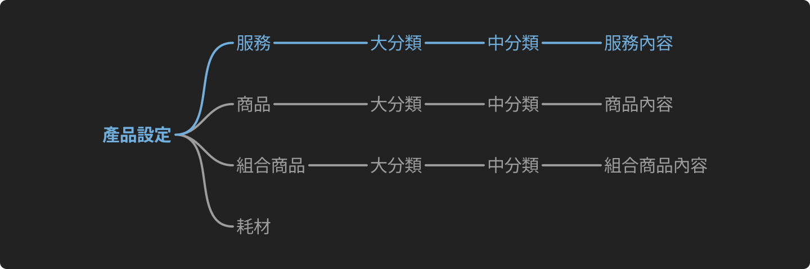
解決階級混亂(上圖)
透過樹狀圖梳理階級關係，定義規則標準。
在四個主要類型之下，透過旗下商品類型劃分出大分類、中分類，產品內容固定在最小級別。
例:
大分類 > 中分類 > 服務內容
徒手 > 物理治療師 > 肩頸矯正
運動 > 有氧運動 > 慢跑30分
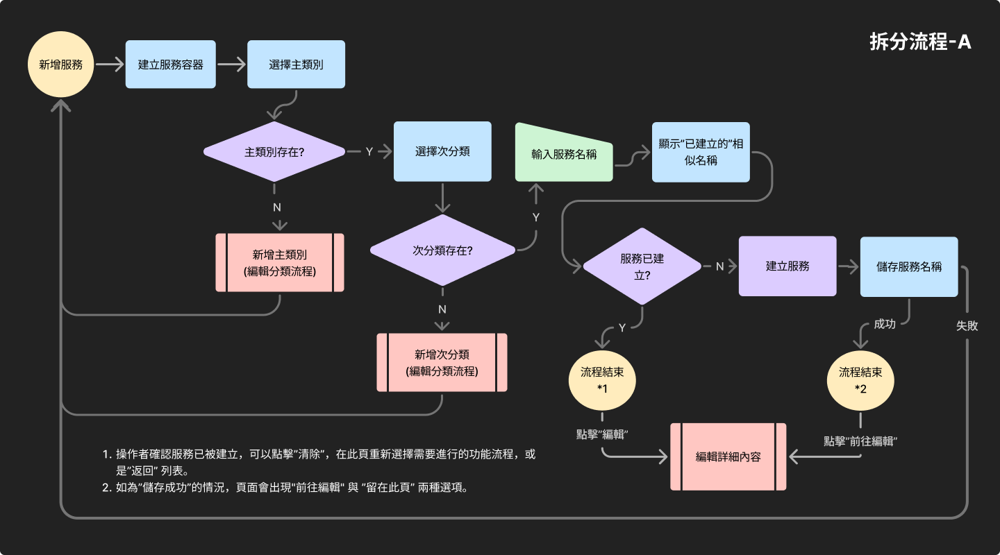
解決操作困難:透過Flow chart 建立流程規劃，釐清目標任務過程。
透過Flow chart 將流程中的事件與步驟統整，排除不必要的支線任務，瞄準核心目標。拆分A、B流程:
-
A流程- 專注於大分類、中分類、產品內容的編輯/刪除功能。
B流程- 產品內容的詳細資料處理。 -
當目標完成後，不增加任何不必要的便利功能。

B 流程僅設定產品內容，分為基礎設定與進階設定，基礎設定為全部必填；進階設定全部為選填，進階設定不需要檢查。
2.3
RWD介面優化
解決子功能散亂的RWD問題，將操作流程回歸頁面主功能區域，取代彈窗模式與側邊工作欄。
管理列表RWD (上圖)
Table設定在 media-width: 768 px 改變展示狀態，方便閱讀與操作。
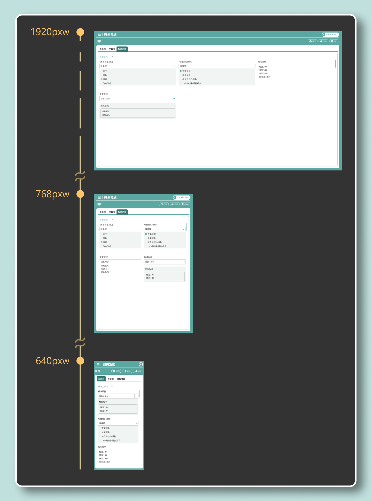
子功能頁面RWD(上圖)
將散亂在右側的子功能統一回歸主區域，以產品新增編輯為例，版面以操作流程規劃排列。
769pxw以上，將column 改為3。
768pxw以下，將column 改為2。
640pxw以下，將column 改為1。
透過閱讀順序配合隱藏顯示，階段性引導操作者進行設定，實際操作請見prototype影片展示。
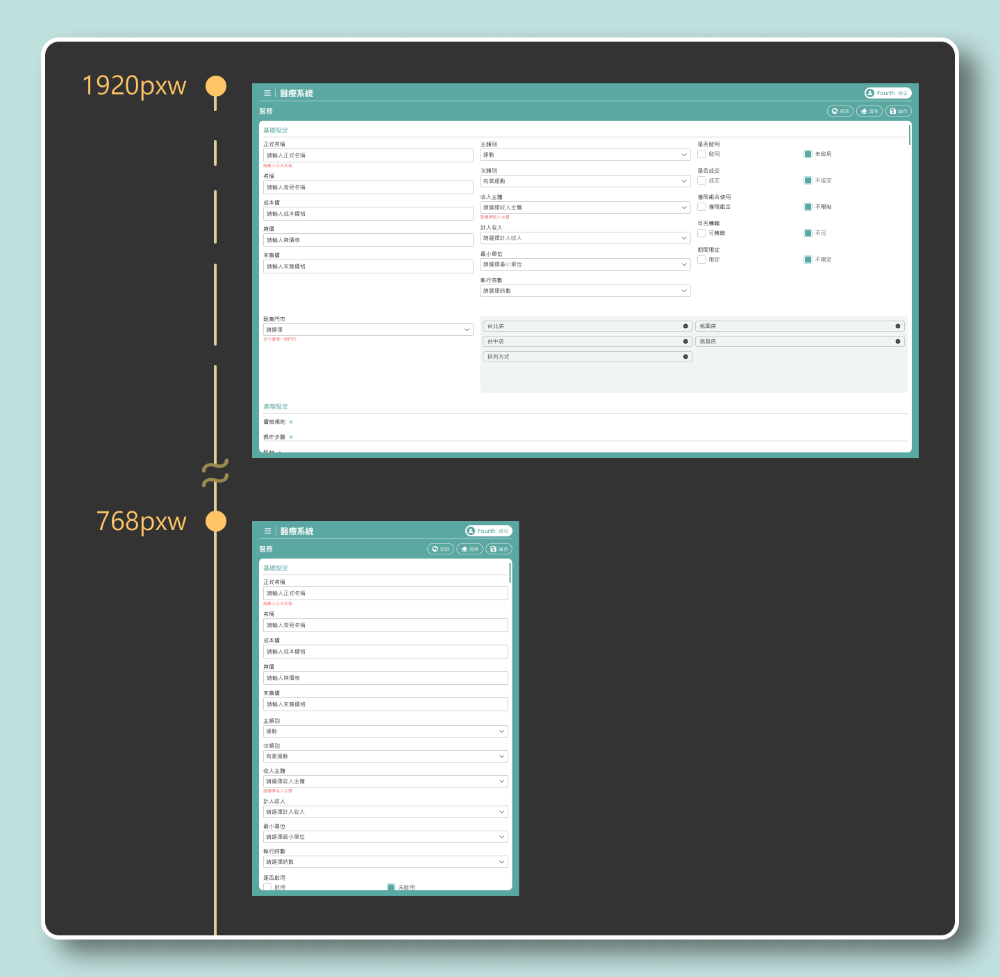
其他功能移出Popup window(上圖)
許多設定與資料編輯功能被困在Popup window，導致RWD後無法操作。
-
統一回歸移回頁面主區域，或獨立的子分頁流程，取代彈窗模式。透過 邏輯梳理 建立流程關聯，協助使用者順利達成功能目標。
3.3
Prototype 設計原型
操作影片展示
醫療後台系統的主要使用者是繁忙的醫護人員，他們需要的是 操作簡單、學習成本低且不易出錯的系統。因此，我採用漸進式揭露的設計方式，逐步引導使用者完成操作，確保不遺漏任何步驟。
每個任務流程獨立、簡化，並維持 穩定一致的操作模式，不僅降低使用難度，也有助於未來功能的擴充與平台的營運維護。
-
醫護人員需求
→ 簡單易用、低學習成本、降低出錯率 -
設計方式
→ 採用漸進式揭露，逐步引導操作 -
任務流程
→ 獨立、標準化，維持穩定一致的操作模式 -
效益
→ 降低使用難度，並利於 未來功能擴充與平台營運維護
介面與操作流程優化(上圖)
在原系統的設計中，為了一次完整顯示所有功能與資料訊息，右側功能欄內的分類會因醫療服務與藥品項目越來越多，造成醫護人員非常難尋找自己的目標。
因此，我加入搜尋以及自動比對功能，結合Section 2 的優化方式，修改產品設定主分類、次分類、服務內容的新增、修改、刪除流程。
同時加上完整RWD，支援手持式裝置操作。
影片展示: 產品設定> 修改次分類
介面與操作流程優化(上圖)
影片展示: 產品設定> 新增服務內容> 編輯服務內容資料
專案心得
此專案中，我學到的最大挑戰是設計師在他人強主導決策環境與有限時間下如何配合團隊協作，以及UI設計的邏輯問題與落地實現。如果若有更多主導空間並且時間成本允許，我會在前端工程師重構時，以用戶易上手操作與標準化流程為原則，改善目前規則邏輯不統一的畫面與操作流程。並透過醫護人員的問卷結果，為產品功能做出優化迭代。
在與團隊合作上，透過前端工程師使用的Angular 框架，我學習到如何以套件為基礎，統一修改視覺顏色、微調部分元件，加速設計稿的完成，確保專案進度符合公司時程規劃。同時，我也學習透過GIT與功程師協作，拉取、推送修改的SCSS，確保頁面視覺與設計稿保持一致。
由於篇幅有限，GIT 在其他專案作品集中，進一步說明。